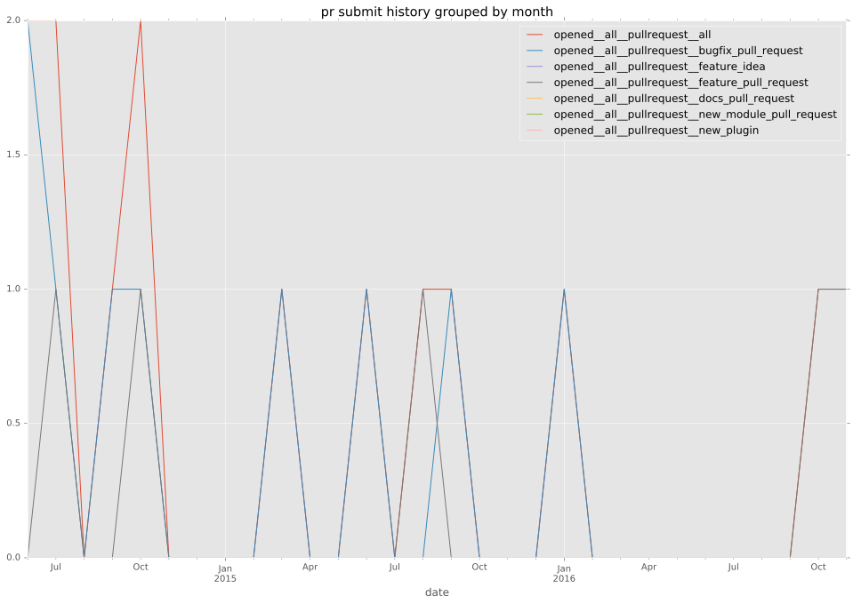

authors
maintainers
- trondhindenes
contributors
- angstwad : 10 commits
- trondhindenes : 8 commits
- abadger : 4 commits
- sivel : 3 commits
- bcoca : 3 commits
- brannon : 1 commits
total issue counts
unknown: 1
feature pull request: 4
pullrequest: 15
docs pull request: 2
bugfix pull request: 9
feature idea: 3
issue: 16
bug report: 12
issue history
pullrequest history

days open by issue type
bugfix pull request
count: 17
std: 43.3891420411
min: 0
max: 105
median: 3.0
mean: 34.3529411765
all
count: 42
std: 83.6840193748
min: 0
max: 364
median: 19.0
mean: 59.7619047619
pullrequest
count: 0
std: nan
min: nan
max: nan
median: nan
mean: nan
docs pull request
count: 4
std: 23.0940107676
min: 0
max: 40
median: 20.0
mean: 20.0
feature pull request
count: 5
std: 114.548243112
min: 0
max: 249
median: 2.0
mean: 80.4
feature idea
count: 3
std: 201.553962998
min: 0
max: 364
median: 32.0
mean: 132.0
issue
count: 0
std: nan
min: nan
max: nan
median: nan
mean: nan
bug report
count: 12
std: 81.9593395125
min: 0
max: 237
median: 75.0
mean: 87.3333333333
closures grouped by total days open